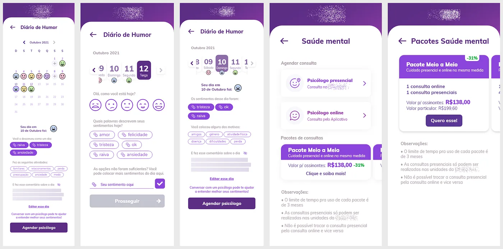

Saúde Mental
| A Squad foi formada com o objetivo de buscar novos produtos para a empresa. Já contávamos com atendimento presencial, aplicativo, site… o quê mais poderia ser feito? No aplicativo, um dos grandes desafios seria incentivar o seu uso diário… Bem, aqui eu explico como e porque adicionamos uma funcionalidade de cuidado em saúde mental. | |
| Mobile Design | |
| UI DesignUX Design |
{kind=link}

A necessidade
A Squad foi formada com o objetivo de buscar novos produtos para a empresa. Já contávamos com atendimento presencial, aplicativo, site… o quê mais poderia ser feito? No aplicativo, um dos grandes desafios seria incentivar o seu uso diário… Bem, aqui eu explico como e porque adicionamos uma funcionalidade de cuidado em saúde mental.
Meu papel
Atuei como UX e UI designer, segui o design system da época, fiz benchmarks, além dos papéis em todas as cerimônias ágeis.
Meu principal desafio aqui foi construir um diário de humor, onde o usuário iria poder registrar o dia a dia da sua saúde mental.
Resultados
Sobre os resultados… esse filho, infelizmente, não nasceu pra mim.Nas semanas anteriores à publicação da nova versão do app com a nova funcionalidade, fui desligado por motivos de reorganização corporativa.
O que tive de resultado foi poder ver as funcionalidades sendo colocadas em uma versão beta do app, e o pessoal que testou gostando do visual e do fluxo.
O mockup estará aqui (coloco quando sair a versão nas lojas de app, por motivos). Mas vou colocar os prints da versão anterior à final.
Métricas:
Usuários ativos; taxa de utilização; tempo de utilização; conversão em agendamentos.
História
Aqui eu vou detalhar o trabalho nessa squad…
Começamos como um time focado em trazer novas funcionalidades. No período que estive presente, desenvolvemos a parte de saúde mental no app e começamos a inception para um produto de saúde nutricional.
Na saúde mental, teríamos 3 grandes tarefas: fazer o agendamento para consultas presenciais e online (essa parte eu recebi ‘pronto’), fazer um diário de humor para acompanhamento da pessoa e disponibilizar pacotes de desconto em consultas (parece pouca coisa, mas envolve pensar em copywriting, ux writing e UI).


Benchmark, algumas funcionalidades desejadas, e quadro de requisitos.
Comecei com um benchmark bem extenso para ver que estava rolando no mundo dos apps de diário de humor (eu deixei a imagem pequena de propósito, pra ver a extensão). Selecionei algumas funcionalidades que achei bem interessantes e diferenciadas — ainda que talvez não fossem aplicáveis ao nosso caso. Depois, fiz um quadro de requisitos, baseado no briefing que recebi do PO do que seria o nosso produto e de ideias que achei interessante colocar. Daqui pra frente tive a ajuda de duas estagiárias que já podiam ser contratadas sem medo: a Luciana e a Isabela (meu muito obrigado!).

Uma vez que os requisitos foram levantados, comecei a trabalhar em um protótipo simples de baixa fidelidade, mas visual, pra poder validar como seria o fluxo. A equipe aprovou e comecei a fazer as telas:

Também fiz estudos de caso, para conseguir mais informações sobre o que os usuários pensam sobre saúde mental. A conclusão que cheguei é que esse é um terreno arriscado, as pessoas ainda estão se acostumando a tudo ser online, muitas sentem falta do presencial e, em alguns casos, existem justificativas bem válidas para que a consulta seja olho no olho. De toda forma, talvez seja algo bem comum para as gerações futuras.

Já para os pacotes de consultas, desenhei um fluxo para saber onde melhor se encaixa e o quê melhor se encaixa. Dessa forma consegui ter uma melhor noção do trabalho e dos pontos onde deveria tocar e do conteúdo em cada ponto. Logo após, comecei a colocar nas telas, como já foi mostrado nos prints anteriores.

Também gerei os cards de chamada aos pacotes, cards dos pacotes menores e os cards maiores com todas as informações (além de uma variação de apresentação, na próxima imagem, mais à direita). Precisei usar copy aqui pois a ideia é que o texto capturasse a curiosidade para os pacotes, sem atrapalhar o fluxo normal. Um detalhe aqui, nas telas de pagamento eu evitei usar qualquer um dos cards pois isso poderia tirar o foco da pessoa finalizar a compra da consulta — um negativo pros negócios. O nome dos pacotes também foi pensado levando em consideração o seu conteúdo e aplicando o guia de UX Writing da empresa (que eu participei da criação com muito orgulho!).

Meu trabalho nessa squad terminou aqui, mas antes de encerrar, vou comentar sobre as outras coisas feitas em paralelo. Fizemos uma inception
para descobrir qual seria o nosso novo produto, para ser feito após o saúde mental. Após a discussão em algumas reuniões e a formação desse quadro a seguir, decidimos por saúde nutricional.

Até comecei a pesquisar e fazer um novo bench, mas o trabalho findou.
Mas quem sabe ele continua em uma outra oportunidade…